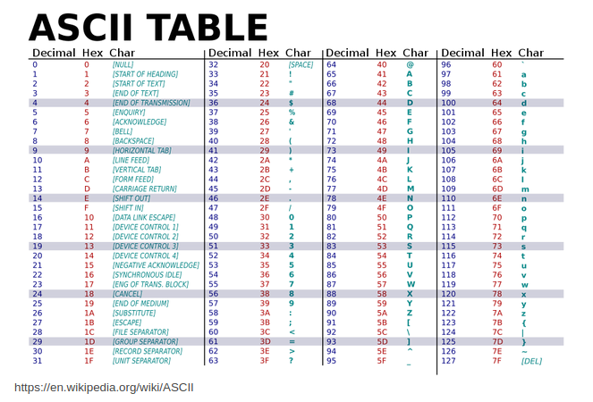

Assignment Information
Topics: accessibility, visual impairments, Braille, C basics
Summary: strings, file I/O, manipulating ASCII characters, program arguments
Braille is a tactile writing system used by people with visual impairment. It is traditionally written with embossed paper and on signage. Braille users can read computer screens using refreshable braille displays. They can write braille with the original slate and stylus or type it on a braille writer, such as a portable braille notetaker or computer that prints with a braille embosser.
Assignment
This assignment will require you to write a program that takes a filename as a command line argument, opens and reads the file, then translates the file from ASCII to Braille. It will create an output file to write the Braille to. You will write all your code from scratch using the stdio library.
You will need to write the software to meet the requirements (below). You are provided 2 text files which will be used for testing. Note that other files that represent other test cases can be used for grading.
You will write a program(braille_translator) which will perform the following:
It will run from the command line with this usage:
> ./braille <input_file_name>
The Braille translator should perform in the following way:
- Open the file <input_file_name> and read in the ASCII characters.
- Translate the ASCII into Braille letters.
- Create an output file named <input_file_name>.output.
- Write the Braille letters to the output file.
If more than one, or no arguments are supplied, exit and display the following:
Usage: ./braille <input_file_name>
When your program is complete, it should run like this:
> gcc -Wall -o braille braille.c
> ./braille hello.txt
hello.txt contains:
hello world
hello.txt.output should contain:
1 0 1 0 1 0 1 0 1 0 0 0 0 1 1 0 1 0 1 0 1 1
1 1 0 1 1 0 1 0 0 1 0 0 1 1 0 1 1 1 1 0 0 1
0 0 0 0 1 0 1 0 1 0 0 0 0 1 1 0 1 0 1 0 0 0
Part 1: Braille Breakdown
Braille was the first writing system with binary encoding. The system as devised by Braille consists of two parts:
- Character encoding that mapped characters of the alphabet to arrays of six bits.
- The physical representation of those six-bit characters with raised dots in a braille cell.
- Within an individual cell, the dot positions are arranged in two columns of three positions. A raised dot can appear in any of the six positions, producing sixty-four (26) possible patterns, including one in which there are no raised dots.
- A pattern is commonly described by listing the positions where dots are raised, the positions being universally numbered, from top to bottom, as 1 to 3 on the left and 4 to 6 on the right. For example, dot pattern 1-3-4 describe a cell with three dots raised, at the top and bottom in the left column and at the top of the right column: that is, the letter ⡉ m
- The first ten letters of the alphabet, a–j, use the upper four dot positions: ⠁⠃⠉⠙⠑⠋⠛⠓⠊⠚ (black dots in the table below).
- The next ten letters, k–t, are identical to a–j, respectively, apart from the addition of a dot at position 3 (red dots in the table): ⠅⠇⠍⠝⠕⠏⠟⠗⠎⠞
- The next ten letters (the next "decade") are the same again, but with dots also at positions both 3 and 6 (green dots). Here w was left out as not being a part of the official French alphabet at the time of Braille's life.
- Space in Braille is represented by a cell with no dots raised.

Output should be recognizable as Braille. In your output, you can use 0’s and 1’s, with 1’s representing raised dots and 0’s representing flat dots.
Only the 26 alphabet characters, upper and lowercase, and space are required for a minimal solution. All input characters not supported by your solution should be ignored. You are not allowed to use Unicode Braille characters. Vertical display of letters in Braille is acceptable. Bonus points for displaying Braille letters horizontally.
In our program, a Braille letter will be an array of six integers, representing each dot as such:
0 3
1 4
2 5
Part 2: Handling ASCII
Since only the characters a-z and A-Z are supported in our implementation, the method ASCII_to_braille will need to first check if the character can be translated to a valid Braille letter. We can refer to an ASCII chart, and come up with acceptable ranges of characters. Don’t forget about spaces: “ ”.
If not, it should return as null and otherwise be ignored by your program.
For each range of characters, upper and lower, subtracting a or A respectively from the character will give the character’s place in the alphabet. Using modulo on that value will tell which decade each character is and what dots in that character are raised.
For example:
input: ‘C’
‘C’ - 'A' = 2 (starting at 0, aka ‘A’ - ‘A’)
Remember that w and W are special cases. Refer to the Braille chart and see that what we get here is off by one from the Braille chart. Account for this by instead valuing a/A as 0 and incrementing from there.
Part 3: Assignment Instructions
- Clone the Braille translator repo.
- Create an ActivityJournal.txt and estimate the time you will need to complete the program.
- Your implementation MUST be named braille_translator.c
- Implement your code for the functionality described above.
- Use standard I/O functions e.g. fopen(), fread(), fwrite(), etc. Remember the man pages!
- DO NOT use system calls such as open, read, etc.
- DO NOT use a dictionary for all of the Braille characters.
- DO NOT use the Unicode Braille.
- Make sure to test your code using the supplied txt files and your own test files.
- Make sure to validate your output. You can compare the output to this Online Braille Generator’s output.
- Check for memory leaks. Remember that tools like valgrind and gdb can help diagnose errors.
Grading Criteria
- Activity Journal (10)
- Clean build (5)
- Correctly handle arguments and check for possible I/O errors (10)
- Correctly open and close a file using standard I/O functions (10)
- Correctly read from file and write to file using standard I/O functions(10)
- Correctly translate ASCII chars to Braille letters (25)
- Correct file output (10)
- Correctly managing memory (20)
- BONUS: display Braille horizontally. (10)